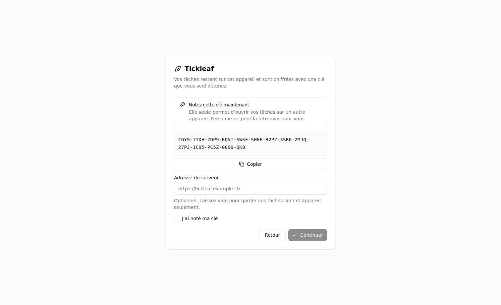
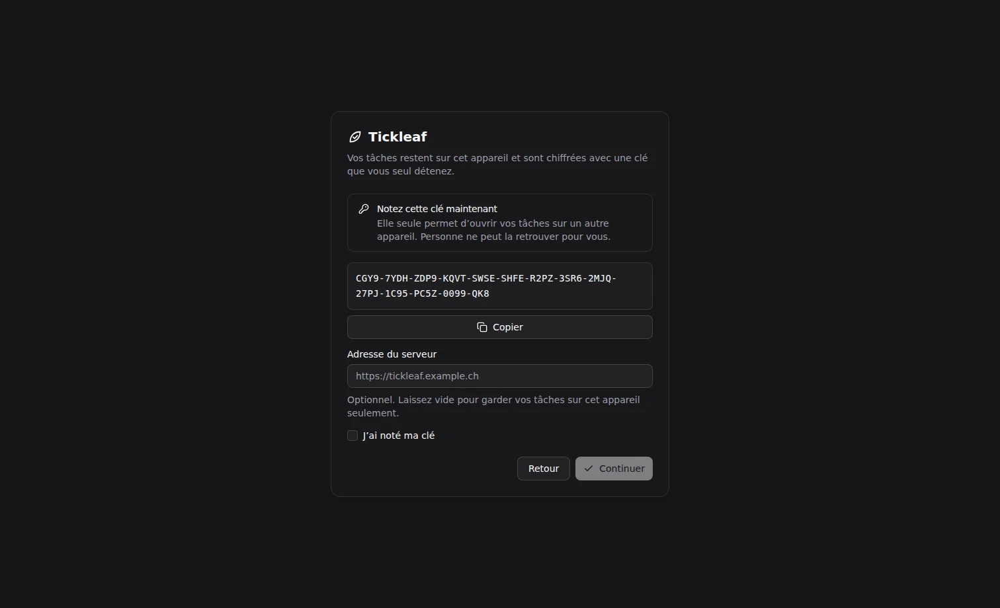

Getting started
Tickleaf runs in the browser, as a desktop app or on Android. All of them use the same interface and the same encrypted format, so devices can share the same tasks.
The interface is in French. This documentation names the buttons and pages as the app shows them.
Choose how to run it
- In the browser: open the app. Nothing to install, and it installs as a PWA if you want.
- Native apps: Windows, macOS, Linux and Android, from the download page. They ring reminders. See Desktop and Android apps.
- Your own server: one Docker container serves the app and relays the sync. See Self-hosting.
First launch


- Choose Créer une clé and store the recovery key somewhere safe, or Entrer une clé existante to join your tasks from another device.
- Enter the address of your sync server, or skip it to stay local. The app hosted on this site and the native apps ask for it. On your own server, sync starts on its own.
- Add a first task in the field at the top: see Tasks and projects.
On Android, the first screen also offers Scanner un QR code: a device already set up hands over the key and the server address, so there is nothing to type. See Pair a phone.
Keep your recovery key. Anyone holding it can read your tasks, and losing it makes them unrecoverable. The server cannot help you.
Run from source
You need Bun.
git clone https://github.com/adrien-cardinale/Tickleaf.git
cd Tickleaf
bun install
bun run dev- Relay:
http://localhost:3000 - UI:
http://localhost:5173(proxies/apito the relay)